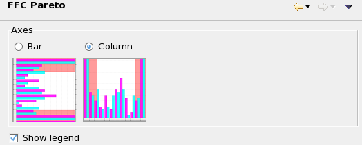

FFC Pareto preference settings
The FFC Pareto preference page lets you set display options for Pareto charts of first failing cycles.

These settings are available:
- Axes: Whether the Pareto chart should consist of horizontal bars or vertical columns.
Show legend: If this option is checked, a legend is displayed beside the chart.
Functional changes
- Introduced in SmarTest 7.2.0